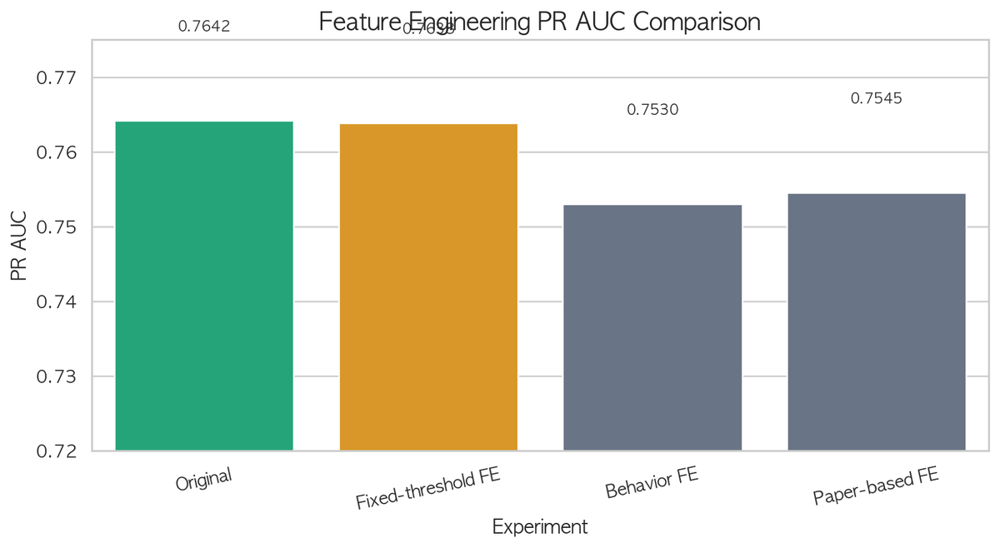

피처 엔지니어링 실험
다양한 파생변수를 실험했으나, 원본 피처가 가장 우수한 성능을 보였습니다
1실험 개요
총 5회의 피처 엔지니어링 실험을 진행. 주요 3가지 접근 방식을 상세히 소개합니다.
실험 목적
EDA에서 확인된 이탈 패턴(장기 미접속, 낮은 시청량, Basic/Mobile 조합 등)을 모델에 더 명시적으로 전달하여 예측 성능을 개선할 수 있는지 검증합니다.
도메인 직관으로 기준값을 직접 지정 (30일, 180분 등 하드코딩) → 29개 피처 생성
train 분포의 분위수에서 기준값을 학습하여 적용 → 35개 피처 생성 (누수 방지)
07-1 피처 subset 선별 + 하이퍼파라미터 조합 탐색
최소 피처로 F1 유지 가능한 경량 모델 탐색
RFM, 가격 가치, 추천 효과, 전환 위험 등 논문 요인을 proxy 변수로 구현 (27개)
원본 피처 18개 확인하기 최종 채택
수치형 (10개)
age고객 나이
account_age_months가입 기간 (월)
monthly_revenue월 매출
avg_watch_time주당 평균 시청 시간
watch_sessions_per_week주당 시청 세션 수
days_since_last_login최근 로그인 공백 (일)
avg_rating_given평균 평점
recommendation_click_rate추천 클릭률
completion_rate콘텐츠 완료율
app_rating앱 평가 점수
범주형 (8개)
gender성별
country국가
subscription_type요금제 (Basic/Standard/Premium)
primary_device주 사용 기기
preferred_content_type선호 콘텐츠 유형
recommendation_source추천 경로
region지역
payment_method결제 수단
2고정 임계값 기반 파생변수 (07-1)
도메인 직관으로 기준값을 직접 하드코딩하여 파생변수 생성
추가된 피처 구분
주요 파생변수 예시
| 피처명 | 설명 |
|---|---|
watch_time_per_session | 세션당 평균 시청 시간 |
inactive_ratio | 계정 기간 대비 미접속 비율 |
engagement_score | 완료율+클릭률+평점 종합 |
basic_mobile_flag | Basic+Mobile 조합 |
low_watch_long_inactive | 저시청+장기미접속 조합 |
고정 임계값 기반 결과 비교
Stacking 모델 (LR + LightGBM + XGBoost) 기준, Test Set 성능
| Feature Set | PR AUC | ROC AUC | F1 (조정) | Recall (조정) | 판정 |
|---|---|---|---|---|---|
| Original (18개) | 0.7643 | 0.9067 | 0.6938 | 0.7334 | 채택 |
| Engineered (47개) | 0.7638 | 0.9061 | 0.6933 | 0.7458 | 미채택 |
미채택 사유: Recall만 소폭 상승했지만 PR AUC, ROC AUC, F1이 모두 하락했습니다. 기존 강한 변수(days_since_last_login, 시청량 등)의 변형이 중복 신호를 만들어 모델에 노이즈를 추가한 것으로 판단됩니다.
3데이터 기반 임계값 파이프라인 (07-2)
train 분포의 분위수에서 기준값을 학습하여 적용 — 데이터 누수 방지 구조
파이프라인 설계 핵심
ChurnBehaviorFeatureEngineer — sklearn BaseEstimator + TransformerMixin을 상속한 커스텀 Transformer.
fit 시 train 데이터에서만 quantile 임계값을 학습하고, transform 시 해당 임계값을 적용하여 data leakage를 원천 차단합니다.
피처 카테고리 구성
주요 파생변수 예시
| 피처명 | 설명 |
|---|---|
watch_per_login_day | 접속일 대비 시청 강도 |
inactive_low_watch_flag | 미접속+저시청 복합 위험 |
low_interest_flag | 낮은 추천 클릭+평점 → 무관심 |
basic_mobile_flag | Basic+Mobile 이탈 고위험 조합 |
high_risk_behavior_count | 위험 플래그 합산 종합 점수 |
Leakage 방지 핵심: quantile 기반 flag의 임계값을 fit(train)에서만 계산하고 transform 시 고정 적용 → test 데이터 정보가 피처 생성에 반영되지 않음
데이터 기반 임계값 모델별 결과 비교
4개 모델에서 Original vs Behavior FE 비교, Test Set PR AUC 기준
| 모델 | Original PR AUC | Behavior FE PR AUC | 변화량 | Top 10% Churn | 판정 |
|---|---|---|---|---|---|
| LogisticRegression | 0.7549 | 0.7530 | -0.0019 | -0.9% | 미채택 |
| LightGBM | 0.7536 | 0.7518 | -0.0018 | -1.3% | 미채택 |
| GradientBoosting | 0.7506 | 0.7513 | +0.0007 | -0.9% | 미채택 |
| RandomForest | 0.7442 | 0.7322 | -0.0120 | -0.9% | 미채택 |
미채택 사유: 35개 행동 피처 추가 시 4개 모델 모두에서 Top 10% 정밀도가 하락했습니다. Leakage-safe 설계는 올바르지만, 기존 원본 피처가 이미 이탈 패턴을 충분히 포착하고 있어 추가 정보가 노이즈로 작용했습니다.
4논문 기반 Proxy 변수 설계 (07-5)
글로벌 OTT/SVOD 해지 요인 논문에서 제시된 요인을 현재 데이터셋의 proxy로 구현
참고 논문
출처: DBpia
출처: e-Article
논문 기반 피처 설계 개념
위 논문에서 제시된 해지 요인을 현재 데이터셋의 proxy 변수로 구현
watch_time_per_plan, value_for_money_score, price_burden_proxy
recommendation_effectiveness, personalization_risk
switching_risk_proxy, subscription_fatigue_proxy
rfm_churn_risk, service_dependency_score
논문 기반 파생변수 27개 전체 목록 미채택
| 논문 요인 | 출처 | 피처명 | 설명 |
|---|---|---|---|
| RFM 변형 | ①③ | recency_score |
마지막 로그인 이후 경과 일수 |
frequency_score |
주당 시청 세션 수 | ||
monetary_score |
요금제 등급 proxy (Basic=1, Standard=2, Premium=3) | ||
rfm_churn_risk |
미접속·시청빈도·요금제를 결합한 해지 위험 종합 점수 | ||
| 가격 대비 가치 | ②③ | watch_time_per_plan |
요금제 등급 대비 주당 시청 시간 |
sessions_per_plan |
요금제 등급 대비 주당 시청 세션 수 | ||
completion_per_plan |
요금제 등급 대비 콘텐츠 완료율 | ||
price_burden_proxy |
시청 시간 낮은 고요금제 사용자의 가격 부담 proxy | ||
high_plan_low_usage |
Premium인데 시청 시간이 중앙값 미만인 사용자 flag | ||
value_for_money_score |
시청시간+세션+완료율을 요금제로 나눈 가치 점수 | ||
| 추천/개인화 반응 | ① | recommendation_effectiveness |
추천 클릭률 × 완료율 — 추천이 소비로 이어지는 비율 |
recommendation_mismatch |
추천 클릭률 - 완료율 차이 — 클릭 후 이탈 가능성 | ||
personalization_risk |
추천 클릭률·앱 평가 모두 중앙값 미만 flag | ||
is_algorithm_source |
유입 경로가 Algorithm인지 여부 | ||
recommendation_satisfaction_proxy |
클릭률+완료율+평점 결합 추천 만족도 | ||
| 전환 위험 | ①③ | switching_risk_proxy |
미접속·저시청·낮은 추천 반응이 동시에 나타나는 flag |
| 서비스 필요성 | ③ | service_dependency_score |
세션·접속·시청을 p95 정규화한 서비스 의존도 점수 |
low_service_need |
서비스 의존도가 중앙값 미만인 사용자 flag | ||
| 구독 피로감 | ② | subscription_fatigue_proxy |
장기 구독 + 미접속 + 저빈도 시청 복합 flag |
usage_per_account_age |
계정 연령 대비 현재 주당 시청 시간 | ||
| 몰아보기 | ① | avg_minutes_per_watch_session |
세션당 평균 시청 시간 |
binge_intensity_proxy |
세션당 시청시간 × 완료율 — 몰아보기 강도 | ||
| 콘텐츠 고갈 | ① | content_exhaustion_proxy |
시청 시간·완료율 모두 상위 25% flag |
| 논문 범주 | ③ | is_tv_device |
주 기기가 Smart TV인지 여부 |
is_retention_genre |
선호 장르가 Drama 또는 Comedy인지 여부 | ||
| 종합 위험 | ①②③ | paper_risk_count |
위험 flag들의 합산 — 동시 위험 신호 수 |
※ 모든 quantile/median 임계값은 fit(train)에서만 계산하여 data leakage를 방지합니다.
논문 기반 FE 결과 비교
각 모델별 best 후보 기준, Test Set 성능 (valid threshold 적용)
| Feature Set | Best 모델 | Test F1 | Test PR AUC | Test ROC AUC | 판정 |
|---|---|---|---|---|---|
| Original | LogisticRegression | 0.6873 | 0.7549 | 0.9038 | 채택 |
| Paper FE (45개) | LogisticRegression | 0.6858 | 0.7545 | 0.9036 | 미채택 |
논문 기반 피처 방향성 진단
성능 개선에는 실패했지만, churn 방향성과 일치하는 해석적 가치는 확인됨
5피처 엔지니어링 최종 결론
실험별 PR AUC 비교

5회 실험 결과 — 원본 피처(Original)가 가장 높은 PR AUC를 기록
최종 판단: 원본 피처 18개 채택
Stacking 모델이 원본 수치형/범주형 피처에서 이미 이탈 패턴을 충분히 학습하고 있었습니다.
파생변수 대부분이 기존 강한 변수(days_since_last_login, 시청량, 완료율)의 변형으로, 중복 신호가 많았습니다.
논문 기반 피처는 해석력은 좋았지만 (RFM 위험, 서비스 의존도 등 churn 방향성 일치), 예측 성능 개선에는 기여하지 못했습니다.
이 결과는 "복잡한 파생변수를 추가한다고 항상 좋아지는 것은 아니다"는 중요한 실험적 교훈입니다.